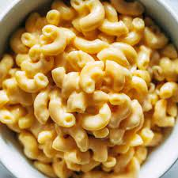

Macaroni and Cheese

A very quick and easy fix to a tasty side-dish. Fancy, designer mac and cheese often costs forty or fifty dollars to prepare when you have so many exotic and expensive cheeses, but they aren't always the best tasting. This recipe is cheap and tasty.
Ingredients
- Elbow Macaroni
- Butter
- Flour
- Salt
- Black Pepper
- Milk
- Shredded Cheddar Cheese
Directions
- Bring a large pot of lightly salted water to a boil. Cook elbow macaroni in the boiling water, stirring occasionally until cooked through but firm to the bite, 8 minutes. Drain.
- Melt butter in a saucepan over medium heat; stir in flour, salt, and pepper until smooth, about 5 minutes. Slowly pour milk into butter-flour mixture while continuously stirring until mixture is smooth and bubbling, about 5 minutes. Add Cheddar cheese to milk mixture and stir until cheese is melted, 2 to 4 minutes.
- Fold macaroni into cheese sauce until coated.